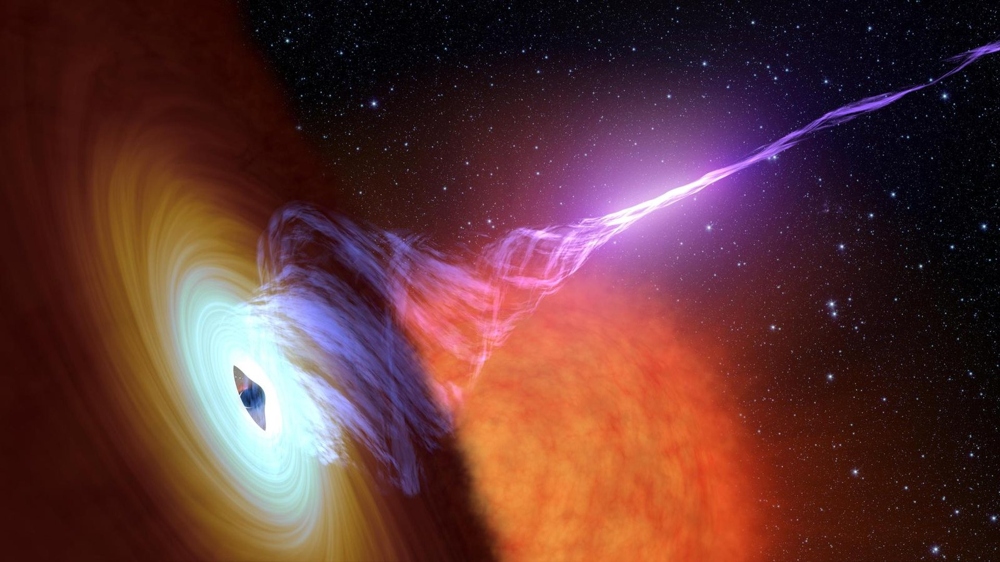
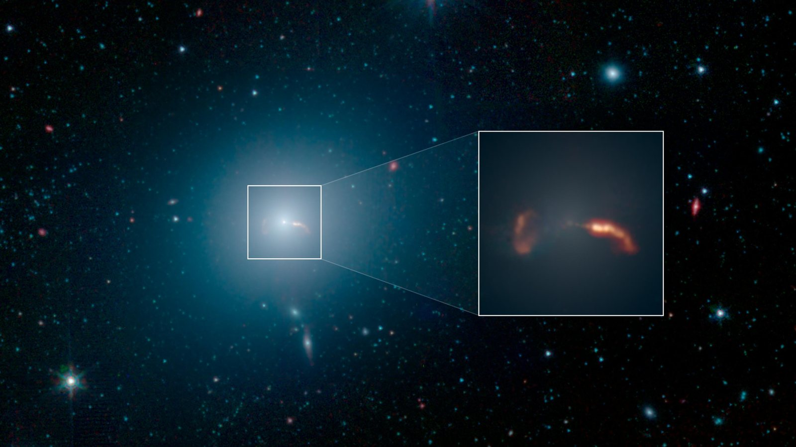

Αστρικές
Μάζα 3–100 ηλιακές. Σχηματίζονται από την κατάρρευση μεγάλων άστρων. Εντοπίζονται συνήθως σε δυαδικά συστήματα, όπου «ρουφούν» ύλη από ένα συνοδό άστρο.
Εκεί που ο χρόνος λυγίζει
Μια μαύρη τρύπα είναι μια περιοχή του χώρου όπου η βαρύτητα είναι τόσο ισχυρή που τίποτα —ούτε το φως— δεν μπορεί να ξεφύγει. Δεν είναι «τρύπα» με την καθημερινή έννοια, αλλά ένα ακραίο βαρυτικό αντικείμενο που γεννιέται από την κατάρρευση ύλης.
Η μαύρη τρύπα περιγράφεται από τη Γενική Θεωρία της Σχετικότητας του Einstein. Η μάζα της παραμορφώνει τον χωροχρόνο γύρω της τόσο έντονα που οι τροχιές του φωτός κλείνονται προς τα μέσα. Το όριο από το οποίο δεν επιστρέφει τίποτα ονομάζεται ορίζοντας γεγονότων.
Η «ακτίνα» αυτού του ορίου, η ακτίνα Schwarzschild, εξαρτάται μόνο από τη μάζα: για τη Γη θα ήταν 9 χιλιοστά, για τον Ήλιο περίπου 3 χιλιόμετρα. Μια μαύρη τρύπα δεν «ρουφάει» τα πάντα γύρω της: αν βρισκόμασταν σε σταθερή τροχιά μακριά από τον ορίζοντα, θα περιφερόμασταν κανονικά, σαν γύρω από οποιοδήποτε άλλο σώμα ίσης μάζας.
Παρατηρούμε μαύρες τρύπες έμμεσα: από την ακτινοβολία της ύλης που θερμαίνεται καθώς στροβιλίζεται γύρω τους, από βαρυτικά κύματα κατά τις συγχωνεύσεις τους, και από τις τροχιές άστρων γύρω από αόρατα κέντρα βάρους.
Οι αστρικές μαύρες τρύπες σχηματίζονται όταν ένα πολύ μεγάλο άστρο (πάνω από 20–25 ηλιακές μάζες) καταρρέει στο τέλος της ζωής του. Ο πυρήνας του συμπιέζεται τόσο ώστε καμία γνωστή δύναμη δεν μπορεί να τον σταματήσει. Το αποτέλεσμα είναι μια μαύρη τρύπα λίγων ηλιακών μαζών.
Οι υπερμεγέθεις μαύρες τρύπες βρίσκονται στα κέντρα γαλαξιών και έχουν μάζες από εκατομμύρια έως δισεκατομμύρια ηλιακές. Το πώς σχηματίστηκαν παραμένει ανοιχτό ερώτημα: πιθανώς από τη συγχώνευση μικρότερων μαύρων τρυπών ή από την κατάρρευση τεράστιων νεφών αερίου στο πρώιμο σύμπαν. Οι παρατηρήσεις του James Webb δείχνουν ύποπτα μεγάλες μαύρες τρύπες πολύ νωρίς στην ιστορία του σύμπαντος.
Υπάρχει και η θεωρητική κατηγορία των αρχέγονων μαύρων τρυπών, που θα μπορούσαν να σχηματίστηκαν αμέσως μετά τη Μεγάλη Έκρηξη από διακυμάνσεις πυκνότητας. Δεν έχει επιβεβαιωθεί καμία.
Μετακίνησε τον δείκτη και δες πώς ο χρόνος επιβραδύνεται κοντά σε μια μη περιστρεφόμενη μαύρη τρύπα. Η τιμή δείχνει πόσο «πιο αργά» περνά ο χρόνος για έναν παρατηρητή σε τροχιά, σε σχέση με κάποιον μακριά.
Για έναν ρολόι σε τροχιά στην επιλεγμένη απόσταση, περνούν τόσα λεπτά όσα θα έδειχνε ένα ρολόι μακριά από τη μαύρη τρύπα μέσα σε μία ώρα. Η τιμή υπολογίζεται από τη μετρική Schwarzschild και αγνοεί την ταχύτητα της τροχιάς.
Οι μαύρες τρύπες είναι από τις πιο καλά ελεγμένες προβλέψεις της φυσικής. Έχουμε δει τον ορίζοντα γεγονότος του M87* και του Τοξότη A*· έχουμε ανιχνεύσει βαρυτικά κύματα από συγχωνεύσεις μαύρων τρυπών (LIGO/Virgo)· έχουμε μετρήσει τροχιές άστρων γύρω από το γαλαξιακό κέντρο.
Παραμένουν όμως βαθιά ερωτήματα: τι συμβαίνει στο εσωτερικό, όπου η σχετικότητα συναντά την κβαντομηχανική; Πώς λύνεται το «παράδοξο της πληροφορίας»; Οι μαύρες τρύπες εξατμίζονται μέσω της ακτινοβολίας Hawking — αλλά αυτό δεν έχει παρατηρηθεί ποτέ. Και δεν γνωρίζουμε αν υπάρχει πραγματικός «τοίχος» ή αν η πληροφορία χάνεται για πάντα.
Ανοιχτό ερώτημα Η φύση της μοναδικότητας και η κβαντική βαρύτητα παραμένουν από τα μεγαλύτερα άλυτα προβλήματα της φυσικής.
Από τα αστρικά κατάλοιπα μέχρι τους γίγαντες των γαλαξιακών κέντρων.

Μάζα 3–100 ηλιακές. Σχηματίζονται από την κατάρρευση μεγάλων άστρων. Εντοπίζονται συνήθως σε δυαδικά συστήματα, όπου «ρουφούν» ύλη από ένα συνοδό άστρο.

Μάζα 100–100.000 ηλιακές. Υποψήφιες έχουν εντοπιστεί σε σφαιρωτά σμήνη και σε κέντρα μικρών γαλαξιών, αλλά τα στοιχεία είναι ακόμη περιορισμένα.

Μάζα εκατομμύρια έως δισεκατομμύρια ηλιακές. Βρίσκονται στα κέντρα σχεδόν όλων των μεγάλων γαλαξιών. Η M87* και ο Τοξότης A* είναι τα πιο μελετημένα παραδείγματα.
Προσοχή στις «θεωρίες»: οι μαύρες τρύπες δεν είναι πύλες σε άλλα σύμπαντα, ούτε «σκουπίδια» του χωροχρόνου. Οι δημοφιλείς εικόνες της επιστημονικής φαντασίας (σκουληκότρυπες, ταξίδια στον χρόνο μέσω τους) είναι υποθέσεις χωρίς παρατηρησιακή επιβεβαίωση. Αυτό που ξέρουμε με βεβαιότητα είναι η βαρυτική τους επίδραση και η ύπαρξη ορίζοντα γεγονότος.